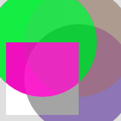
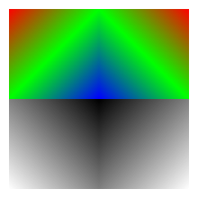
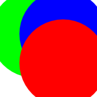
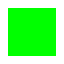

render_context_metal_impl.mm
2,030 pinned linesPinned source · mechanical translation
Red, amber, and green reflect source and ownership closure. Renderer images are verification evidence after translation; they never choose the next implementation task.
Line-weighted status from the exhaustive header and implementation map.
2,030 pinned lines282 pinned linesTranslation completes before compiler diagnostics and behavior fixtures become work queues.
Re-audit the complete source inventory and account for every state-bearing field before further implementation.
Translate the complete Metal ownership unit in pinned source order; fixtures do not select work.
Wire the complete translation and resolve diagnostics without deleting source behavior.
Run structural, lifecycle, failure, platform, image, work-count, and no-WGPU gates.
Complete separate source/spec and ownership/standards reviews, then fix accepted findings.
Promote the header and implementation only when every line, field, configuration, and reachable branch is closed.
9 pinned Metal source/support files: 7 ported, 2 in progress. Renderer ownership contracts: 5 ported, 5 in progress, 1 pending.
The render target retains its target texture, memoryless attachments, and lazily allocated private atomic buffers; resize replaces the complete size-dependent owner set.
The context retains the device and queue. Each frame acquires exactly one concrete Metal command buffer at begin_frame; finish consumes and commits it once, while abandonment releases it uncommitted.
The platform caller owns layer configuration, actor scheduling, and drawable acquisition; each renderer frame borrows exactly one compatible drawable, retains its texture, renders on the frame command buffer, and presents on the next command buffer from the same queue.
The compiler retains metal_features and platform beside shared.pending_jobs, shared.finished_jobs, shared.should_quit, both condition variables, the one-shot compiler callback, and at most one lazily started worker handle; pending work is FIFO, completion publication is LIFO, and drop signals quit and joins before releasing the native callback and its retained device.
Uniform, storage, and vertex rings rotate only after the corresponding GPU frame is safe; CPU writes never race an in-flight frame.
Platform-specific offline metallibs are the shipping shader source. One context-owned compatible-pipeline cache owns the persistent compiler, exact raster preloads, source key/mask policy, three compilation modes, absent/pending/ready/failed slots, LIFO completion routing, and recursive ubershader fallback; resource generations retain only refreshable selected pipeline clones.
Raster ordering, fragment barriers, and render-pass breaks are selected from the same device capabilities and workarounds as the pinned upstream Metal implementation.
A capability-selected or explicitly forced generic-atomic frame realizes the same fixed-function or advanced/HSL pipeline keys, PLS buffer bindings, barriers, and initialize/path/resolve topology as upstream Metal.
Gradient, Gaussian, tessellation, feather-atlas, sampler, path-patch, image-rect, image-texture, and same-texture canvas resources remain context-owned and are created, resized, or recreated at the same lifecycle points as upstream.
A logical FlushDescriptor produces the upstream-equivalent render passes, attachments, barriers, draws, resolves, and resource transitions.
Resources held for a flush remain alive through GPU completion, after which locks and deferred owners are released exactly once even if the context has already been dropped.
Every red or amber row blocks whole-file promotion, regardless of passing feature images.
| Source range | Responsibility | Status | Remaining work | Rust owner |
|---|---|---|---|---|
render_context_metal_impl.mm:1-44 |
translation-unit preamble and platform metallib selection | Partial | iOS simulator visionOS and tvOS embedded-library configurations | crates/nuxie-renderer/src/native_metal/draw_shader.rs |
render_context_metal_impl.mm:45-58 |
make_pipeline_state | Ported | typed-error adaptation | crates/nuxie-renderer/src/native_metal/draw_pipeline.rs |
render_context_metal_impl.mm:59-100 |
image sampler mappings | Ported | — | crates/nuxie-renderer/src/native_metal/samplers.rs |
render_context_metal_impl.mm:101-122 |
ColorRampPipeline | Ported | — | crates/nuxie-renderer/src/native_metal/context.rs |
render_context_metal_impl.mm:123-144 |
TessellatePipeline | Ported | — | crates/nuxie-renderer/src/native_metal/context.rs |
render_context_metal_impl.mm:145-177 |
FeatherAtlasPipeline | Ported | — | crates/nuxie-renderer/src/native_metal/feather_atlas_pipeline.rs |
render_context_metal_impl.mm:178-261 |
DrawPipeline precompiled function selection | Ported | — | crates/nuxie-renderer/src/native_metal/pipeline_names.rs |
render_context_metal_impl.mm:262-402 |
DrawPipeline construction and state | Partial | tool failure injection and full context key coverage | crates/nuxie-renderer/src/native_metal/draw_pipeline.rs |
render_context_metal_impl.mm:403-413 |
is_apple_silicon | Partial | tvOS and visionOS configurations excluded | crates/nuxie-renderer/src/native_metal/capabilities.rs |
render_context_metal_impl.mm:414-453 |
BufferRingMetalImpl | Ported | retained typed-owner adaptation | crates/nuxie-renderer/src/native_metal/upload_buffer_ring.rs |
render_context_metal_impl.mm:454-461 |
MakeContext | Partial | public context options and device-injected factory | crates/nuxie-renderer/src/native_metal/mod.rs |
render_context_metal_impl.mm:462-728 |
RenderContextMetalImpl constructor | Partial | device-injected public MakeContext and remaining Apple configurations; public options exact seven-entry raster preload persistent compiler and retained queue are closed | crates/nuxie-renderer/src/native_metal/context.rs |
render_context_metal_impl.mm:729-734 |
destructor | Ported | Rust field drop and compiler join | crates/nuxie-renderer/src/native_metal/context.rs |
render_context_metal_impl.mm:735-782 |
RenderTargetMetal construction set and make | Ported | typed-error transactional adaptation | crates/nuxie-renderer/src/native_metal/render_target.rs |
render_context_metal_impl.mm:783-829 |
RenderBufferMetalImpl and makeRenderBuffer | Ported | infallible Factory boundary adaptation | crates/nuxie-renderer/src/native_metal/buffer.rs |
render_context_metal_impl.mm:830-906 |
TextureMetalImpl | Ported | ASTC enum-gap correction | crates/nuxie-renderer/src/native_metal/image_texture.rs |
render_context_metal_impl.mm:907-974 |
makeImageTexture | Ported | Factory encoded-RGBA adaptation plus exact raw compressed and mip owner | crates/nuxie-renderer/src/native_metal/context.rs |
render_context_metal_impl.mm:975-985 |
adoptImageTexture | Ported | retained caller texture exposed by factory and reused by canvas | crates/nuxie-renderer/src/native_metal/context.rs |
render_context_metal_impl.mm:986-1015 |
makeRenderCanvas | Ported | private RGBA8 target and image wrappers retain one exact texture | crates/nuxie-renderer/src/native_metal/render_canvas.rs |
render_context_metal_impl.mm:1016-1022 |
makeOreContext | Ported | RIVE_CANVAS-equivalent opt-in feature uses exact retained renderer device and queue | crates/nuxie-renderer/src/native_metal/mod.rs |
render_context_metal_impl.mm:1023-1040 |
buffer-ring factories | Ported | typed rings replace generic protected factories | crates/nuxie-renderer/src/native_metal/upload_buffer_ring.rs |
render_context_metal_impl.mm:1041-1059 |
resizeGradientTexture | Ported | transactional adaptation | crates/nuxie-renderer/src/native_metal/gradient_resource.rs |
render_context_metal_impl.mm:1060-1078 |
resizeTessellationTexture | Ported | transactional adaptation | crates/nuxie-renderer/src/native_metal/tessellation_resource.rs |
render_context_metal_impl.mm:1079-1116 |
resizeFeatherAtlasTexture | Ported | transactional lazy-pair adaptation | crates/nuxie-renderer/src/native_metal/feather_atlas_resource.rs |
render_context_metal_impl.mm:1117-1226 |
findCompatibleDrawPipeline | Partial | production clockwise and clockwiseAtomic realization plus a general FlushDescriptor failure-injection input; key masks three modes placeholders LIFO completion routing cached failures and recursive fallback are closed | crates/nuxie-renderer/src/native_metal/pipeline_cache.rs |
render_context_metal_impl.mm:1227-1237 |
makeCommandBuffer | Ported | retained typed-owner adaptation | crates/nuxie-renderer/src/native_metal/context.rs |
render_context_metal_impl.mm:1238-1254 |
commitCommandBuffer | Ported | async commit with separate caller wait token | crates/nuxie-renderer/src/native_metal/command_submission.rs |
render_context_metal_impl.mm:1255-1265 |
prepareToFlush | Ported | blocking 1,2,0 reservation and abandon ownership | crates/nuxie-renderer/src/native_metal/buffer_ring_coordinator.rs |
render_context_metal_impl.mm:1266-1297 |
buffer viewport and scissor helpers | Ported | — | crates/nuxie-renderer/src/native_metal/mod.rs |
render_context_metal_impl.mm:1298-1393 |
makeRenderPassForDraws | Ported | flush-local upload rings adapt source first-record byte offsets to zero | crates/nuxie-renderer/src/native_metal/draw_pass.rs |
render_context_metal_impl.mm:1394-1451 |
flush gradient prepass | Ported | — | crates/nuxie-renderer/src/native_metal/mod.rs |
render_context_metal_impl.mm:1452-1511 |
flush tessellation prepass | Ported | — | crates/nuxie-renderer/src/native_metal/mod.rs |
render_context_metal_impl.mm:1512-1650 |
flush feather-atlas prepass | Partial | general mixed atlas scheduling | crates/nuxie-renderer/src/native_metal/mod.rs |
render_context_metal_impl.mm:1651-1660 |
flush image mipmaps | Partial | no image reaches a native frame | crates/nuxie-renderer/src/native_metal/image_texture.rs |
render_context_metal_impl.mm:1661-1691 |
flush main attachments | Partial | load dont-care and preserve policies | crates/nuxie-renderer/src/native_metal/mod.rs |
render_context_metal_impl.mm:1692-1720 |
raster PLS attachments | Partial | descriptor-driven coverage clear and general raster flush wiring | crates/nuxie-renderer/src/native_metal/mod.rs |
render_context_metal_impl.mm:1721-1750 |
atomic preserve-target copy | Missing | texture-to-color-buffer copy and BGRA swizzle | - |
render_context_metal_impl.mm:1751-1821 |
flush batch policy and pipeline lookup | Partial | general DrawList and persistent compatible lookup | crates/nuxie-renderer/src/native_metal/mod.rs |
render_context_metal_impl.mm:1822-1835 |
flush scissor cache | Partial | general raster atlas and image batches | crates/nuxie-renderer/src/native_metal/mod.rs |
render_context_metal_impl.mm:1836-1856 |
flush image and sampler binding | Missing | images are not admitted | - |
render_context_metal_impl.mm:1857-1897 |
flush atomic barriers | Ported | admitted generic-atomic paths only | crates/nuxie-renderer/src/native_metal/mod.rs |
render_context_metal_impl.mm:1898-1926 |
flush patch draws | Partial | center-AA and general ranges | crates/nuxie-renderer/src/native_metal/mod.rs |
render_context_metal_impl.mm:1927-1939 |
flush interior and atlas triangles | Partial | general DrawList dispatch | crates/nuxie-renderer/src/native_metal/mod.rs |
render_context_metal_impl.mm:1940-1963 |
flush imageRect | Missing | static buffers retained but never drawn | - |
render_context_metal_impl.mm:1964-1988 |
flush imageMesh | Missing | wrong-backend checks and mesh dispatch | - |
render_context_metal_impl.mm:1989-1998 |
flush initialize and resolve | Ported | admitted generic-atomic paths only | crates/nuxie-renderer/src/native_metal/mod.rs |
render_context_metal_impl.mm:1999-2015 |
flush MSAA boundary | Ported | typed unsupported adaptation | crates/nuxie-renderer/src/native_metal/mod.rs |
render_context_metal_impl.mm:2016-2030 |
postFlush and namespace close | Ported | command callback releases the submitted slot after success or failure | crates/nuxie-renderer/src/native_metal/command_submission.rs |
render_context_metal_impl.h:1-20 |
header preamble and BackgroundShaderCompiler declaration | Ported | — | crates/nuxie-renderer/src/native_metal/background_shader_compiler.rs |
render_context_metal_impl.h:21-88 |
RenderTargetMetal | Ported | — | crates/nuxie-renderer/src/native_metal/render_target.rs |
render_context_metal_impl.h:89-120 |
ContextOptions and MakeContext | Partial | device-injected public factory and remaining Apple construction matrix; public options and retained queue export are closed | crates/nuxie-renderer/src/native_metal/mod.rs |
render_context_metal_impl.h:121-160 |
public resource factories | Ported | typed-error image decode and opt-in RIVE_CANVAS adaptations | crates/nuxie-renderer/src/native_metal/context.rs |
render_context_metal_impl.h:161-189 |
AtomicBarrierType and MetalFeatures | Ported | macOS and iOS supported matrix | crates/nuxie-renderer/src/native_metal/capabilities.rs |
render_context_metal_impl.h:190-203 |
protected buffer rings and DrawPipeline declaration | Ported | typed-owner adaptation | crates/nuxie-renderer/src/native_metal/context.rs |
render_context_metal_impl.h:204-233 |
private orchestration methods | Partial | general encoder pipeline cache flush and completion | crates/nuxie-renderer/src/native_metal/context.rs |
render_context_metal_impl.h:234-282 |
context-owned fields and namespace close | Partial | general draw-pipeline key families remain partial; queue compiler resources and ring ownership are closed | crates/nuxie-renderer/src/native_metal/context.rs |
Checkpoint results are preserved without using them to define translation scope.
The campaign now explicitly rejects feature/tracer-bullet implementation. Source ownership, compiler diagnostics, and then behavior verification are the only work queues.
The common draw-pass source block preserved the existing native corpus and rooted product closure before the campaign returned to preparation.
MTL_DEBUG_LAYER=1 MTL_SHADER_VALIDATION=1 cargo test -p nuxie-renderer --features native-metal-experimental --test native_metal_tracernative Metal tracer: 24/24 passedmake renderer-metal-atomic-oracle-tracersame-runner C++ Metal corpus: 8/8 byte-exactmake renderer-native-metal-tracer-binaryrooted no-WGPU Mach-O: 802,576 bytes, passed forbidden-dependency scanmake metal-port-checkMetal campaign manifest and ownership checker: passedMixed feather-atlas edits remain uncommitted. They are not a promoted feature checkpoint and will be judged only inside the complete implementation-body translation.
Checked-in Metal outputs currently covered by the regression corpus. Green images demonstrate preserved behavior, not complete source support.
≤2 LSB · ≤32 pixels
Source stream

≤2 LSB · ≤32 pixels
Source stream

≤2 LSB · ≤32 pixels
Source stream
≤2 LSB · ≤8 pixels
Source stream
byte-exact 0/0
Source stream

≤2 LSB · ≤48 pixels
Source stream

byte-exact 0/0
Source stream
≤2 LSB · ≤32 pixels
Source stream

byte-exact 0/0
Source stream
≤2 LSB · ≤1024 pixels
Source stream
≤2 LSB · ≤2048 pixels
Source stream
{kind=link}
{kind=link}
{kind=link}
{kind=link}
{kind=link}
{kind=link}
{kind=link}
{kind=link}
{kind=link}
{kind=link}
{kind=link}